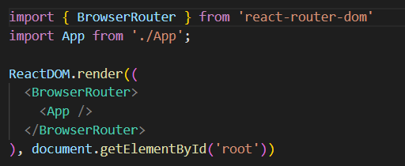
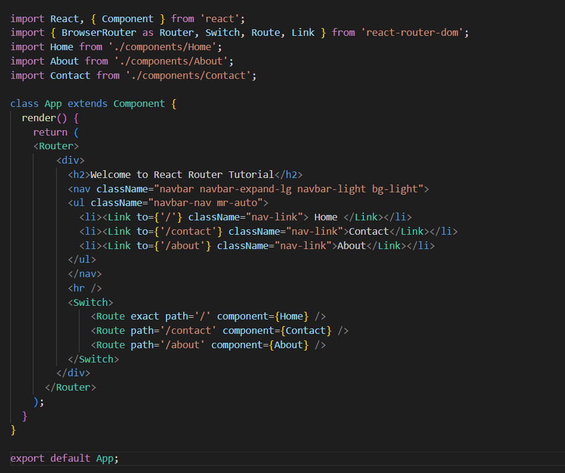

1. What is the Difference between react and react native? Which one is library or framework?
React is an open-source JS library for building the UIs for web applications; besides, React Native is used to build rich mobile UI from declarative components using only JavaScript. react native is more of a frame work build for mobile applications. react is a library used to build sigle page web applications in javascript.
2. What is the package name you are using for routing
For routing web pages in our application, we use Package called react-router-dom. The react-router-dom package contains bindings for using React Router in web applications. We enclose main parent component in Brouserrouter tag and can create routes in our application as required.
3. Routing Implementation

Enclose main parent componenet in BrowserRouter tag and then initilize the routes in route tag as shown below

4. How do you switch/navigate form one component to another in React?
In react we can use routes to navigate from one component to other. We need to use react-router-dom package and need to import BrowserRouter, Route, Link from reacr-router-dom. We can use Link tag to navigate from one component to another.
5. What is lazy loading in react ?
In essence, lazy loading means that a component or a part of code must get loaded when it is required. It is also referred to as code splitting and data fetching. When we have a huge application and need to load lot of data, we chhose the option of lazy loading, which provides information on user request. this makes application little faster and avoid unnecessery data transfermation.
6. Difference b/w Stateful and stateless Component
Prior to react 16.8, functional componenets are called stateless components as they can not manage state of the componenets. they are oresentational components. Class components used to have functionality of managing the state by invoking state object inside a constructor. Class componenets are called Statefyl components. After react 16.8 functional components can manage state by useState hook and can mimic lifecycle methods by useEffect and other hooks.